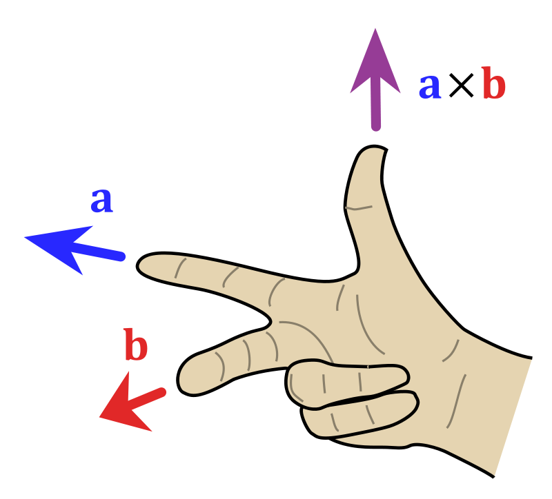

n: number of observations
\(x_{ij}\): the \(j\)-th variable of the \(i\)th observation where \(i=1,2,\dots,n\) and \(j=1,2,\dots,p\)
p: number of variables
\(\mathbf{X}\): is a matrix of size \(n \times p\) whose \((i,j)\)th element is \(x_{ij}\)
\(\mathbf{X}=\) \(\begin{pmatrix} x_{11}&x_{12}&\dots&x_{1p} \\x_{21}&x_{22}&\dots&x_{2p}\\\vdots&\vdots&\ddots&\vdots\\x_{n1}&x_{n2}&\dots&x_{np} \end{pmatrix}\)
Row vector of \(\mathbf{X}\): \(x_i = \begin{pmatrix} x_{i1}\\x_{i2}\\\vdots\\x_{ip} \end{pmatrix}\);
Column vector of \(\mathbf{X}\): \(\mathbf{x}_j = \begin{pmatrix} x_{1j}\\x_{2j}\\\vdots\\x_{nj} \end{pmatrix}\)
With these row and column conventions the entire matrix \(\mathbf{X}\) can be written as:
order: refers to the number of rows and columns of a matrix
rank of matrix: the number of linearly independent rows/columns or with a “transformation” lense it is the number of dimensions in the output or column space
column rank: the number of linearly independent columns
row rank: the number of linearly independent rows
Matrix \(\mathbf{A}\) is full rank: if \(\text{rank}(\mathbf{A})=min(n,p)\)
full rank if \(n<p\): implies full row rank \(\text{rank}(\mathbf{A})=n\)
full rank if \(n>p\): implies full column rank \(\text{rank}(\mathbf{A})=p\)
\(\intercal\): transpose of a matrix
\(\mathbf{X}^{\intercal}=\) \(\begin{pmatrix} x_{11}&x_{21}&\dots&x_{n1} \\x_{12}&x_{22}&\dots&x_{n2}\\\vdots&\vdots&\ddots&\vdots\\x_{1p}&x_{2p}&\dots&x_{np} \end{pmatrix}\)
\(x_i^{\intercal} = \begin{pmatrix} x_{i1}&x_{i2}&\dots&x_{ip} \end{pmatrix}\)
\((\mathbf{A}^\intercal)^\intercal=\mathbf{A}\)
\((\mathbf{A}+\mathbf{B})^\intercal=\mathbf{A}^\intercal+\mathbf{B}^\intercal\)
\((b\mathbf{A})^\intercal=b\mathbf{A}^\intercal\) where \(b\) is a scalar
\((\mathbf{A}\mathbf{B})^\intercal=\mathbf{B}^\intercal\mathbf{A}^\intercal\)
\((\mathbf{A}^{-1})^\intercal=(\mathbf{A}^\intercal)^{-1}\)
trace of a square matrix \(\mathbf{A}\) is the sum of the diagonals or \[\text{tr}(\mathbf{A})=\sum_{j=1}^p a_{jj}\]
\(\text{tr}(\mathbf{A})=\text{tr}(\mathbf{A}^\intercal)\)
\(\text{tr}(\mathbf{A}+ \mathbf{B})=\text{tr}(\mathbf{A}) + \text{tr}(\mathbf{B})\)
\(\text{tr}(b\mathbf{A})=b\text{tr}(\mathbf{A})\)
\(\text{tr}(\mathbf{AB})=\text{tr}(\mathbf{BA})\); if both products are defined
If \(\mathbf{A}\) is symmetric: \[\text{tr}(\mathbf{A})=\sum_{j=1}^p \lambda_j\] where \(\lambda_j\) is the \(j\)-th eigenvalue of \(\mathbf{A}\)
Symmetric Matrix: square and symmetric along the main diagonal \[ \mathbf{X}=\begin{pmatrix} x_{11}&x_{12}&\dots&x_{1n} \\x_{21}&x_{22}&\dots&x_{2n}\\\vdots&\vdots&\ddots&\vdots\\x_{n1}&x_{n2}&\dots&x_{nn} \end{pmatrix}_{n \times n} \] with \(a_{ij}=a_{ji}\) for all \(i \ne j\)
For Symmetric Matrix \(\mathbf{A}=\mathbf{A}^\intercal\)
Diagonal Matrix: a square matrix of order \(p\) is a \(p \times p\) matrix that has zeros in the off-diagonals \[ \mathbf{D}=\begin{pmatrix} d_{1}&0&\dots&0 \\0&d_{2}&0&0 \\\vdots&\vdots&\ddots&\vdots\\0&0&\dots&d_{p} \end{pmatrix}_{p \times p} \]
We often write \(\mathbf{D}=diag(d_1,\dots,d_p)\) to define a diagonal matrix
Identity Matrix: a square matrix, of order \(p\) is a \(p \times p\) matrix that has zeros in the off-diagonals \[ \mathbf{I}_p=\begin{pmatrix} 1&0&\dots&0 \\0&1&0&0 \\\vdots&\vdots&\ddots&\vdots\\0&0&\dots&1 \end{pmatrix}_{p \times p} \]
The identity matrix \(\mathbf{I}_p\) is a special type of diagonal matrix
Zero Vector: a vector of all 0s of size \(n\)
\(\mathbf{0}_n= \begin{pmatrix} 0\\0\\\vdots\\0 \end{pmatrix}_{n\times1}\)
Zero Matrix: a matrix of all 0s of size \(n \times p\) \[ \mathbf{0}_{n \times p} =\begin{pmatrix} 0&0&\dots&0 \\0&0&0&0 \\\vdots&\vdots&\ddots&\vdots\\0&0&\dots&0 \end{pmatrix}_{n \times p} \]
Ones Vector: a vector of all 1s of size \(n\)
\(\mathbf{1}_n= \begin{pmatrix} 1\\1\\\vdots\\1 \end{pmatrix}_{n\times1}\)
Ones Matrix: a matrix of all 1s of size \(n \times p\) \[ \mathbf{1}_{n \times p} =\begin{pmatrix} 1&1&\dots&1 \\1&1&\dots&1 \\\vdots&\vdots&\ddots&\vdots\\1&1&\dots&1 \end{pmatrix}_{n \times p} \]
Matrix Equality: two matrices, \(\mathbf{A}\) and \(\mathbf{B}\) are equal (written \(\mathbf{A}=\mathbf{B}\) ) if an only if \(a_{ij} = b_{ij} \forall i,j\)
Matrix Addition is only defined for two matrices of the same order.Adding matrices you add each of the corresponding values from the two matrices
\[ A + B = \begin{bmatrix} a_{11}&a_{12}\\\\a_{21}&a_{22} \end{bmatrix} + \begin{bmatrix} b_{11}&b_{12}\\\\b_{21}&b_{22} \end{bmatrix} = \begin{bmatrix} a_{11}+b_{11}&a_{12}+b_{12}\\\\a_{21}+b_{21}&a_{22}+b_{22} \end{bmatrix} \]
Matrix Addition shorthand: \[ \mathbf{C} = \mathbf{A} + \mathbf{B} \Leftrightarrow c_{ij} = a_{ij} + b_{ij} \]
Matrix Subtraction is only defined for two matrices of the same order. Subtracting matrices you subtract each of the corresponding values from the two matrices \[ A - B = \begin{bmatrix} a_{11}&a_{12}\\\\a_{21}&a_{22} \end{bmatrix} - \begin{bmatrix} b_{11}&b_{12}\\\\b_{21}&b_{22} \end{bmatrix} = \begin{bmatrix} a_{11}-b_{11}&a_{12}-b_{12}\\\\a_{21}-b_{21}&a_{22}-b_{22} \end{bmatrix} \]
Matrix subtraction shorthand: \[ \mathbf{C} = \mathbf{A} - \mathbf{B} \Leftrightarrow c_{ij} = a_{ij} - b_{ij} \]
Vector Inner Product: for vectors \(\mathbf{x} = \begin{pmatrix} x_{1}&\dots&x_{n} \end{pmatrix}^\intercal\) and \(\mathbf{y} = \begin{pmatrix} y_{1}&\dots&y_{n} \end{pmatrix}^\intercal\), both of the same length \(n\); then the inner product is \[ \begin{split} \mathbf{x}^\intercal \mathbf{y}& = \begin{pmatrix} x_i \dots x_n\end{pmatrix}\begin{pmatrix} y_i \\ \vdots \\ y_n \end{pmatrix}\\ &=\left ( \sum_{i=1}^n x_i y_i \right )_{1 \times 1} \end{split} \]
Vector Outer Product: for vectors \(\mathbf{x} = \begin{pmatrix} x_{1}&\dots&x_{m} \end{pmatrix}^\intercal\) and \(\mathbf{y} = \begin{pmatrix} y_{1}&\dots&y_{n} \end{pmatrix}^\intercal\), both vectors can have different lengths; then the outer product is \[ \begin{split} \mathbf{x} \mathbf{y}^\intercal & = \begin{pmatrix} x_i \dots x_n\end{pmatrix}\begin{pmatrix} y_i \\ \vdots \\ y_n \end{pmatrix}\\ &=\left ( \sum_{i=1}^n x_i y_i \right )_{1 \times 1} \end{split} \]
span: is the linear combination of some set of vectors. for example the span of \(\hat{i}\) and \(\hat{j}\) is the two dimensional plane; \(a\hat{i}+b\hat{j}\) where \(a\) and \(b\) are real numbers; i.e. what vectors can you make from a combination of these vectors?
Linearly Dependent: vectors are linearly dependent if one of the vectors is a scalar multiple of the other or linear combination of the other vectors in the set
basis: within a vector space it is a set of linearly independent vectors that span the full space
Transformation matrix: A matrix which contains in columns where the basis vectors end at. For example if the normal matrix describing \(\hat{i}\) and \(\hat{j}\) is: \(\begin{bmatrix}1&0\\0&1\end{bmatrix}\) then after a transformation by rotating by 90\(^\circ\) counterclockwise would be \(\begin{bmatrix}0&-1\\1&0\end{bmatrix}\)
Matrix-Vector multiplication: With matrix
\[ \mathbf{A}= \begin{bmatrix} a_{11}&\dots&a_{1n}\\ \vdots&\ddots&\vdots\\ a_{m1}&\dots&a_{mn}\\ \end{bmatrix}_{m \times n} \] and matrix
\[ \mathbf{B}= \begin{bmatrix} b_{11}&\dots&b_{1p}\\ \vdots&\ddots&\vdots\\ b_{n1}&\dots&b_{np}\\ \end{bmatrix}_{n \times p} \]
becomes:
$$ \[\begin{split} \mathbf{AB}&= \begin{bmatrix} a_{11}&\dots&a_{1n}\\ \vdots&\ddots&\vdots\\ a_{m1}&\dots&a_{mn}\\ \end{bmatrix} \begin{bmatrix} b_{11}&\dots&b_{1p}\\ \vdots&\ddots&\vdots\\ b_{n1}&\dots&b_{np}\\ \end{bmatrix}\\ &= \begin{bmatrix} \sum_{j=1}^na_{1j}b_{j1}&\sum_{j=1}^na_{1j}b_{j2}&\dots&\sum_{j=1}^na_{1j}b_{jp}\\ \sum_{j=1}^na_{2j}b_{j1}&\sum_{j=1}^na_{2j}b_{j2}&\dots&\sum_{j=1}^na_{2j}b_{jp}\\ \vdots&\vdots&\ddots&\vdots\\ \sum_{j=1}^na_{mj}b_{j1}&\sum_{j=1}^na_{mj}b_{j2}&\dots&\sum_{j=1}^na_{mj}b_{jp}\\ \\ \end{bmatrix}_{m \times p} \end{split}\]$$
\[ \mathbf{A}= \begin{bmatrix} a_{11}&\dots&a_{1p}\\ \vdots&\ddots&\vdots\\ a_{n1}&\dots&a_{np}\\ \end{bmatrix}_{n \times p} \] and vector
\[ \mathbf{x} = \begin{bmatrix} x_1\\\vdots\\x_p \end{bmatrix}_{p \times 1} \] becomes:
\[ \begin{split} \mathbf{Ax}&= \begin{bmatrix} a_{11}&\dots&a_{1p}\\ \vdots&\ddots&\vdots\\ a_{n1}&\dots&a_{np}\\ \end{bmatrix} \begin{bmatrix} x_1\\\vdots\\x_p \end{bmatrix}\\ &= \begin{bmatrix} \sum_{j=1}^pa_{1j}x_j\\ \vdots\\ \sum_{j=1}^pa_{nj}x_j\\ \end{bmatrix}_{n \times 1} \end{split} \]
\[ \begin{bmatrix} a&b\\c&d \end{bmatrix} \begin{bmatrix} x\\y \end{bmatrix} = x\begin{bmatrix} a\\c \end{bmatrix} + y\begin{bmatrix} b\\d \end{bmatrix} =\begin{bmatrix} ax+by\\cx+dy \end{bmatrix} \]
\[ \overrightarrow{u} \cdot \overrightarrow{v}= \begin{bmatrix} u_{1}\\\\u_{2}\\\\u_{3} \end{bmatrix} \cdot \begin{bmatrix} v_{1}\\\\v_{2}\\\\v_{3} \end{bmatrix} = u_{1} \cdot v_{1} + u_{2} \cdot v_{2} + u_{3} \cdot v_{3} \]
\[ \overrightarrow{u}\cdot\overrightarrow{v}= \Vert \overrightarrow{u} \Vert \cdot \Vert \overrightarrow{v} \Vert \cdot \cos{\theta} \]
\[ \overrightarrow{u}\cdot\overrightarrow{v}= \Vert \overrightarrow{u} \Vert \cdot \Vert \overrightarrow{v} \Vert \cdot \cos{90^{\circ}} = 0 \] #### Cross Product: a type of multiplication operation that results in a vector
ignoring a horizontal line at a time; cross multiply remaining terms
\[ \overrightarrow{u}\times\overrightarrow{v}= \begin{bmatrix} u_{1}\\\\u_{2}\\\\u_{3} \end{bmatrix} \times \begin{bmatrix} v_{1}\\\\v_{2}\\\\v_{3} \end{bmatrix} = \begin{bmatrix} u_{2}v_{3}-u_{3}v_{2}\\\\u_{3}v_{1}-u_{1}v_{3}\\\\u_{1}v_{2}-u_{2}v_{1} \end{bmatrix} \]
\[ \Vert \overrightarrow{u} \times \overrightarrow{v} \Vert = \Vert \overrightarrow{u} \Vert \cdot \Vert \overrightarrow{v} \Vert \cdot \sin{\theta} \]
\[ \overrightarrow{u} \times \overrightarrow{v} \neq \overrightarrow{v} \times \overrightarrow{u} \] \[ \overrightarrow{u} \times \overrightarrow{v} = -\overrightarrow{v} \times \overrightarrow{u} \]

\[ \overrightarrow{u}\times\overrightarrow{v}= \begin{bmatrix} u_{1}\\\\u_{2}\\\\u_{3} \end{bmatrix} \times \begin{bmatrix} v_{1}\\\\v_{2}\\\\v_{3} \end{bmatrix} = det \left ( \begin{bmatrix} \hat{i}&u_{1}&v_{1}\\ \hat{j}&u_{2}&v_{2}\\ \hat{k}&u_{3}&v_{3} \end{bmatrix} \right ) = \begin{bmatrix} \hat{i}(u_{2}v_{3}-u_{3}v_{2})\\ \hat{j}(u_{3}v_{1}-u_{1}v_{3})\\ \hat{k}(u_{1}v_{2}-u_{2}v_{1}) \end{bmatrix} \]
What is the geometric interpretation of the Cross Product? The cross product scalar is the size of the parallelogram between the vectors (i.e. the deteminant) and is in the direction perpendicular to the plane of that parallelogram (also obeying the right hand rule to determine the size)
orthonormal Matrix - Transformation matrix where the basis vectors stay perpendicular and of unit length (Rotation Transformations)
What is the formula for a empathy transformation? For a transformation depicted in our basis as \(\mathbf{M}\) and the translation of basis from theirs to ours as \(\mathbf{A}\) then the empathy translation is \(\mathbf{A}^{\intercal}\mathbf{M}\mathbf{A}\); this full matrix product is a transformation as someone else sees it
Conceptual definition of an eigenvector in 3d? The axis of rotation
Conceptual definition of an eigenvector in 2d? A vector, which after transformation is NOT knocked off of it’s span (only stretched or squished)
Eigenvalue / Eigenvector Definition: Let \(\mathbf{A}\) be an \(n \times n\) matrix. A scalar \(\lambda\) is called an eigenvalue of \(\mathbf{A}\) if ther is a nonzero vector \(\mathbf{x}\) such that \(\mathbf{A} \mathbf{x} = \lambda \mathbf{x}\). Such a vector \(\mathbf{x}\) is called an eigenvecotr of \(\mathbf{A}\) corresponding to \(\lambda\)
Framework for solving for Eigenvectors: \[ \begin{split} \mathbf{A} \mathbf{x} &= \lambda \mathbf{x}\\ \mathbf{A} \mathbf{x} &= (\lambda \mathbf{I}) \mathbf{x}\\ \mathbf{A} \mathbf{x} - (\lambda \mathbf{I}) \mathbf{x} &= \mathbf{0}\\ (\mathbf{A} - \lambda \mathbf{I}) \mathbf{x} &= \mathbf{0}\\ \text{det}(\mathbf{A} - \lambda \mathbf{I}) &= \mathbf{0}\\ \end{split} \]
Eigenbasis: all basis vectors are eigenvectors
Change of Basis Matrix: Matrix made up of column vectors